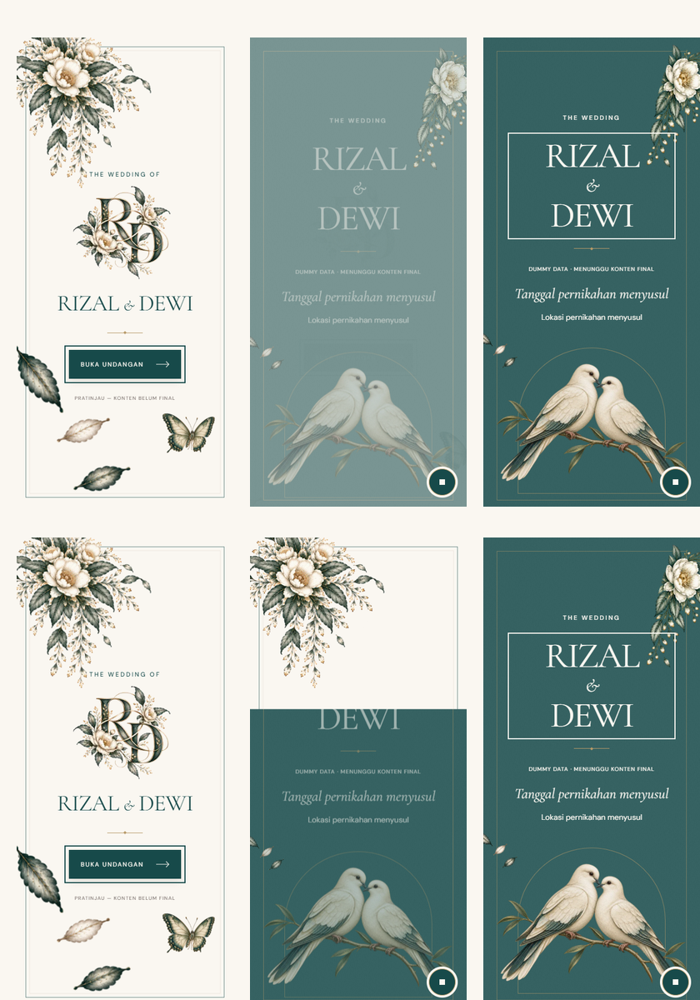

A — Botanical Dissolve · B — Editorial Lift. Reload each preview to replay. Both handoffs target 1400ms. Keyboard focus is intentionally visible in the captures.
Top row: A. Bottom row: B. Columns: composed cover, in-flight frame, Hero. Captures are sampled after a 700ms wait; screenshot overhead means they are not exact synchronized animation frames.

A uses outward botanical movement and an opacity dissolve. B uncovers the Hero from bottom to top with a moving paper edge. The intermediate capture can clip a heading momentarily; all text is fully exposed at handoff.